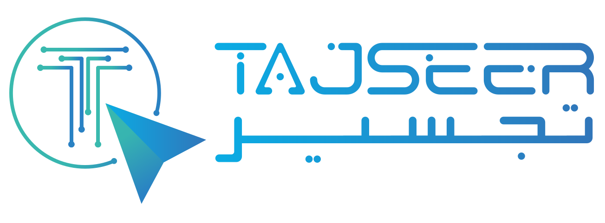

Education · Development · TechnologyTAJSEER · SAUDI ARABIA · SINCE 2009
Tajseer develops e-learning courses, distance learning and training, virtual reality, STEM methodology, and educational consultancy.
Planning · implementation · development · programming
Learning content built for computers, smart devices and different operating systems.
IMAGE
SOUND
MOTION
Interfaces and interactive activities.
THE SAME CONTENT RESPONDS
The original Tajseer composition persists while selected content is magnified, related and brought into hierarchy.
VIDEO · AUDIO · ANIMATION
Professional graphic interfaces with attention to detail, color, contrast and meaning.
E-LEARNING
Individual learner needs
SCORM compatibility
LMS / CMS / MOOCs publishing support
CURATION → STRUCTURE
Verified service content retains its identity while hierarchy, relationships and purposeful sequencing become visible.
Content, interaction and delivery are designed as one coherent system.
DEVELOPMENT / APPLICATION
The learning system is now precise enough to support interaction, delivery and application.
Reliable digital educational materials.
A learner-oriented sequence.
Interfaces and interactive activities.
Publishing support for learning platforms.
IMPACT RESOLUTION
Tajseer brings educational content, technology and development into one coherent learning outcome.
Tajseer plans, implements, develops and programs e-learning and distance-learning projects.
The resolved knowledge canvas remains present as company history enters.
Tajseer is a company specialized in e-learning course development, distance learning and training, virtual reality, STEM methodology, and training and educational consultancy. Since its inception in Saudi Arabia in 2009, the company has planned, implemented, developed and programmed e-learning and distance-learning projects.